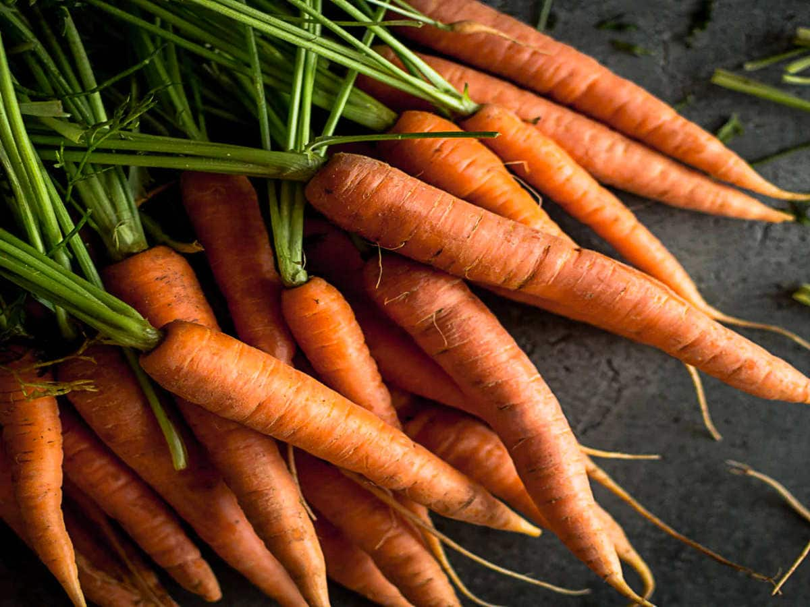

| NAME |
Weight/Volume |
Description |
Image |
Carrots |
php: 80 per kilo |
Carrots contain many nutrients, including beta-carotene and antioxidants, that may support your overall health as part of a nutrient-rich diet. |
 |
| Bellpeppers |
Php: 30 per kilo |
Bell peppers, Capsicum annuum are a cultivar group of annual or perennial plants in the family Solanaceae grown for their edible fruits. Bell pepper plants are short bushes with woody stems that grow brightly colored fruits. |
|
| Potato |
Php: 40 per kilo |
Potatoes are typically planted in the spring and harvested in the late summer or early fall. They grow best in well-drained soils with a pH between 4.5 and 7.5. Potatoes require a lot of water, especially during the flowering and fruiting stages, and they are sensitive to frost. |
 |
Tomato |
Php:50 per kilo |
Tomato plants are vines, becoming decumbent, and can grow up to 3 m (9.8 ft); bush varieties are generally no more than 100 cm (3 ft 3 in) tall. They are tender perennials, often grown as annuals. |
 |
| Talong |
Php:45 per kilo |
Eggplant, Solanum melongena, is a tropical, herbaceous, perennial plant, closely related to tomato, in the family Solanaceae which is grown for its edible fruit. The plants has a branching stem and simple, long, flat. | >
|